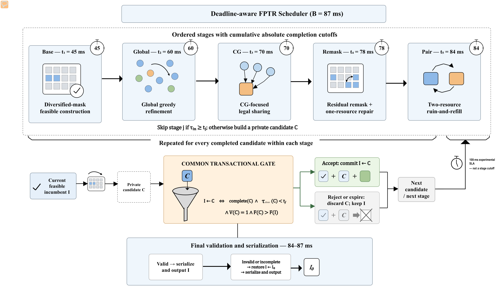

01
Base
多样化掩码构造首个可行解

联合波束与资源调度 · C++17 / Python
FPTR 面向截止时间约束的无线调度：始终保留一个可发布的可行解，在私有状态中尝试细化，并且只提交完整、及时、合法且更优的候选解。
01 · 为什么难
波束选择会改变可用速率，资源成员关系会影响共享，缓存上限又会改变每一步的真实收益。任何局部修改，都可能让原本合法的分配越界。

02 · 核心方法
I 是始终可发布的 incumbent，C 是隔离构造的候选。四项检查全部通过才执行 I ← C；任一检查失败，I 保持不变。
complete(C)候选解完整
t_done(C) < tⱼ阶段截止前完成
V(C) = 1结构验证通过
F(C) > F(I)传输量严格提升
每个阶段继承前一阶段的最好可行解，并拥有独立完成截止点。最后预留时间用于最终验证与序列化。
多样化掩码构造首个可行解
按缓存感知的边际收益全局重定价
在兼容组内进行合法多用户共享
根据剩余需求修复掩码与单资源分配
双资源 ruin-and-refill，完成 Full 阶段
BeamFirst 是独立参考方法，不进入这条累积链。

03 · 公开证据
公开仓库提供实验协议、独立验证器和绘图脚本。下列图展示累积阶段增益、预算—质量权衡、运行时间分布，以及兼容组压力与小规模精确比较。


Code-only public release这是 code-only 公开版本。历史密封结果与论文正文不在仓库中；所有性能主张应由重新生成的工件或单独提供的证据复核。
04 · 复现路径
调度结果写入标准输出；可选阶段轨迹写入标准错误，因此诊断不会污染分配格式。
git clone https://github.com/rudykon/FPTR_Scheduler.git
cd FPTR_Scheduler
g++ -std=c++17 -O2 src/scheduler.cpp src/core.cpp -o scheduler
./scheduler --stage full --budget-ms 87 --trace < instance.in > allocation.outpython3 tools/scheduler_validator.py --help
python3 -m unittest discover -s tests -vpython3 experiments/paper_experiments.py \
--quick \
--out /tmp/fptr-quick-results